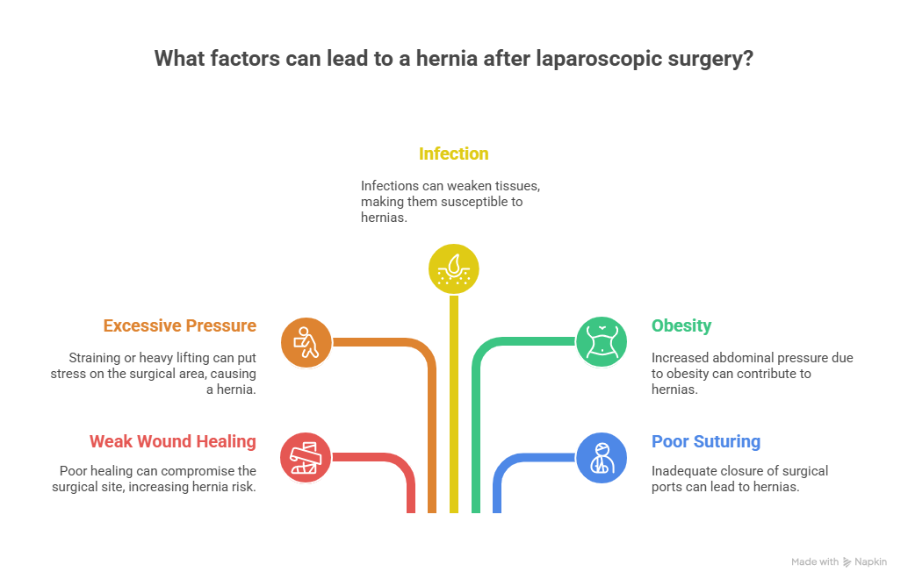
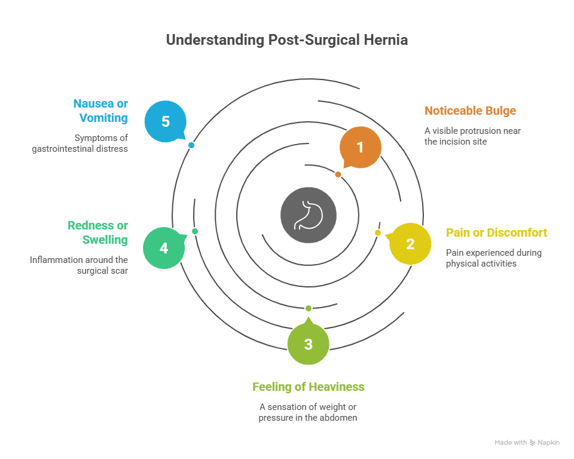
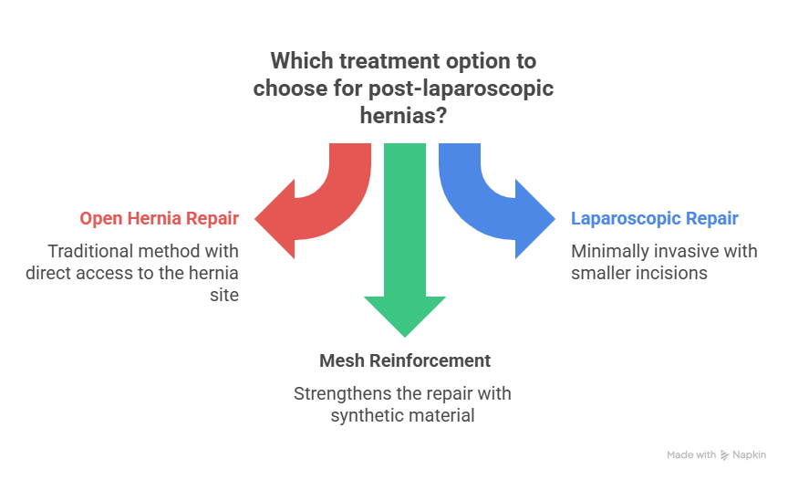

Laparoscopic surgery has revolutionized modern medicine by offering minimally invasive procedures that allow for quicker recovery, smaller incisions, and reduced pain. However, like all surgical procedures, it’s not entirely free of risks. One concern that patients sometimes raise is – “Can you get a hernia after laparoscopic surgery?”
The answer is yes, it is possible, though not common. While laparoscopic surgery is considered safer and more precise than open surgery, post-operative hernias, particularly at the incision site, can occur. This blog will explore why hernias may develop after laparoscopic procedures, how to identify the signs, ways to prevent them, and the best treatment options—including when to seek help from a trusted expert like Dr. Atul Peters, for advanced hernia surgery in Delhi.
Understanding Hernia
A hernia occurs when an internal organ or tissue pushes through a weak spot in the surrounding muscle or connective tissue. The most common types include:
- Inguinal hernia (groin)
- Umbilical hernia (belly button)
- Incisional hernia (through a previous surgical scar)
- Hiatal hernia (upper stomach through the diaphragm)
Hernias can cause visible bulging, pain during movement or coughing, and discomfort during daily activities. Left untreated, they can lead to serious complications like strangulation of the organ involved.
Understanding Laparoscopic Surgery
Laparoscopic (keyhole) surgery is a minimally invasive technique that uses a small camera (laparoscope) and instruments inserted through tiny incisions. It is widely used for procedures like:
- Gallbladder removal
- Hernia repair
- Appendectomy
- Weight loss surgeries
- Gynaecological operations
This technique reduces the size of surgical wounds, which in turn lowers the chance of infection, scarring, and extended recovery periods. However, any surgical wound—no matter how small—can potentially be a weak point in the abdominal wall.
Can You Get a Hernia After Laparoscopic Surgery?
Yes, you can. This is known as an incisional hernia, and it happens when the tissue beneath the incision does not heal properly, allowing abdominal contents to bulge through.

How does It Happen?
Here are common causes of hernia formation after laparoscopic surgery:
- Weak Wound Healing: If the abdominal wall doesn’t heal properly, the incision site becomes vulnerable.
- Excessive Pressure: Lifting heavy objects, chronic coughing, or straining too soon after surgery can increase abdominal pressure and lead to a hernia.
- Infection: An infection at the surgical site can compromise healing and weaken the muscle wall.
- Obesity: Extra weight puts more strain on the abdominal wall and incisions.
- Poor Suturing or Port Closure: If the laparoscopic port sites (especially those >10 mm) aren’t closed correctly, hernias can develop.
Risk Factors for Post-Laparoscopic Hernia
While not everyone develops a hernia post-surgery, some individuals are more at risk, including those who:
- Are you overweight or obese
- Have diabetes or immune disorders
- Smoke or drink heavily
- Are older
- Had multiple surgeries in the same area
- Did not follow post-operative care instructions
Signs and Symptoms of a Post-Surgical Hernia

It’s important to know what to look for after a laparoscopic surgery:
- A noticeable bulge near the incision site
- Pain or discomfort while lifting, coughing, or bending
- A feeling of heaviness or pressure in the abdomen
- Redness or swelling near the scar
- Nausea or vomiting (in severe cases with bowel obstruction)
If you experience any of these symptoms weeks or months after your procedure, consult a specialist immediately.
How Common is It?
Post-laparoscopic hernias are relatively uncommon, especially when performed by skilled professionals. The risk of incisional hernia is estimated to be around 1% to 3% depending on the procedure, technique, and patient profile. This risk increases with larger trocars (surgical tools) and in patients with poor healing capacity.
That’s why choosing an experienced Laparoscopic Surgeon in Delhi, like Dr. Atul Peters, is crucial for both surgical success and prevention of complications like hernias.
How is a Hernia Diagnosed after Laparoscopy?
A hernia may be diagnosed during a physical exam or through imaging tests such as:
- Ultrasound
- CT scan
- MRI
These tests help determine the size, type, and extent of the hernia, and whether surgery is required.
Treatment Options for Post-Laparoscopic Hernias

If a hernia develops after laparoscopic surgery, treatment is often surgical, especially if symptoms are painful or if complications arise.
1. Open Hernia Repair
An incision is made over the hernia to reposition the tissue and reinforce the wall, often with mesh.
2. Laparoscopic Hernia Repair
In some cases, the hernia can be repaired laparoscopically, using the same minimally invasive technique.
3. Mesh Reinforcement
Most modern hernia surgeries include a surgical mesh to support weakened tissue and reduce the risk of recurrence.
Can You Prevent Hernia After Laparoscopic Surgery?
While not all hernias are preventable, you can reduce your risk significantly with proper care:
Follow These Tips:
- Avoid lifting heavy weights for at least 4–6 weeks after surgery.
- Follow your surgeon’s instructions on activity restrictions.
- Maintain a healthy weight.
- Manage constipation and avoid straining during bowel movements.
- Control chronic coughs (as from asthma or smoking).
- Attend follow-up appointments for proper healing monitoring.
Your surgeon may also recommend wearing an abdominal binder post-surgery for additional support.
Hernia Surgery by Dr. Atul Peters!
Contact Now!
Book Your Appointment
Conclusion
To answer the question—can you get a hernia after laparoscopic surgery?—Yes, it is possible, but not very common. It mostly depends on surgical technique, post-op care, and patient-specific risk factors. Timely diagnosis and treatment can prevent complications and improve outcomes.
If you notice any unusual bulge, pain, or symptoms after laparoscopic surgery, consult a hernia expert immediately. With experienced care and modern techniques, laparoscopic surgery in Delhi is safe, effective, and minimally invasive. Dr. Atul Peters offers expert evaluation and repair for all types of hernias with a focus on patient comfort and long-term results.
Frequently Asked Questions
Can I develop a Hernia years after Laparoscopic surgery?
Are Hernias more common after Open surgery or Laparoscopic surgery?
Can Hernias after Laparoscopic surgery be repaired laparoscopically?
How long after Laparoscopic surgery should I avoid heavy lifting?
Recommended Further Reading
Have Personal Health Questions?
Consult with Dr. Atul Peters and our expert multidisciplinary team at Max Smart Super Speciality Hospital, Saket, New Delhi.
Book Your Consultation